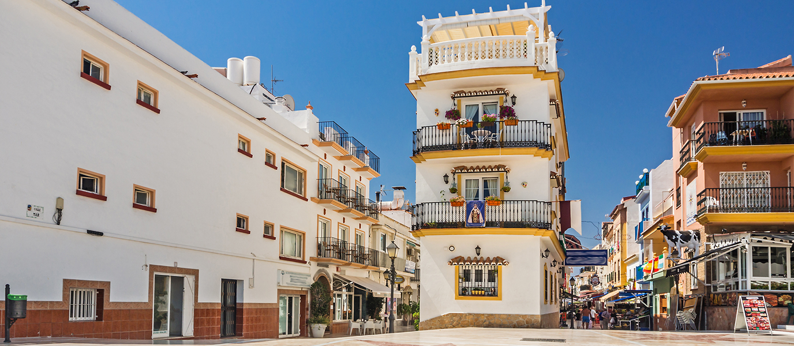
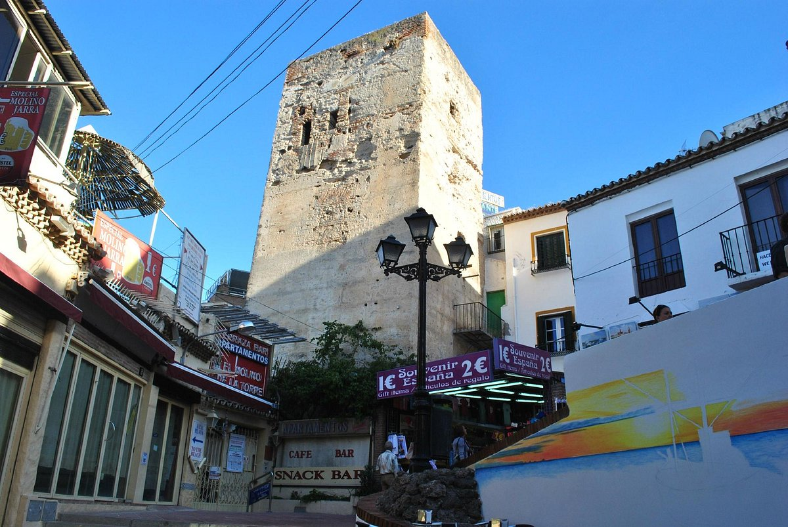
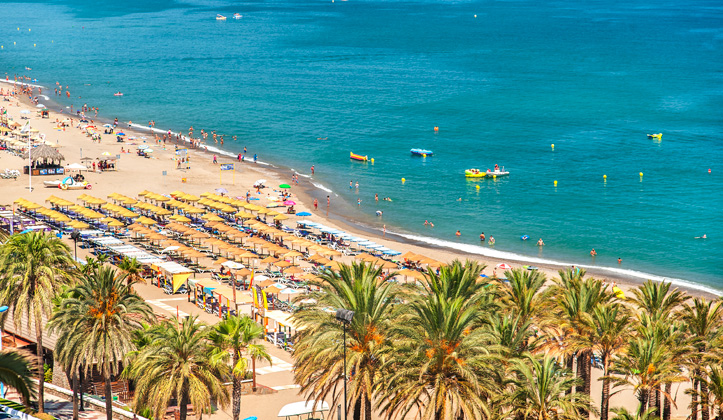
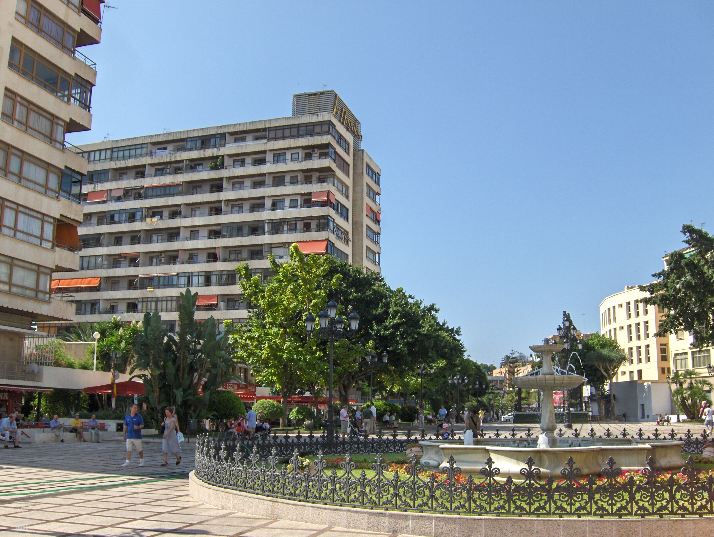

Playa, espetos, beach club, tardeo y festival: la guía hora por hora para exprimir un día completo en Torremolinos, de la mañana a la medianoche.
18 jun 20268 min de lecturaGuía · Torremolinos

El centro de Torremolinos, punto de partida de un día perfecto en la Costa del Sol
Hay destinos en los que un día se queda corto. Torremolinos es uno de ellos. Siete kilómetros de playa con Bandera Azul, un casco histórico con murales, chiringuitos donde el pescaíto nunca decepciona, beach clubs que arrancan a las cuatro de la tarde y, cuando el sol se pone, una tarde-noche que no para. Todo en el mismo municipio, todo a pie o en cercanías.
Esta es la guía para aprovechar un día completo en Torremolinos sin desperdiciar ni una hora.
9:00 hDesayuno en la Calle San Miguel
Llega al centro de Torremolinos antes de que el calor apriete. La Calle San Miguel, eje peatonal y corazón comercial del municipio, está a otra velocidad a primera hora de la mañana: terrazas sin aglomeraciones, luz mediterránea y el olor a café recién hecho colándose desde las cafeterías.
Un clásico para empezar es pedir un café con leche y un mollete con aceite y tomate en cualquier bar de la zona. Si quieres algo más elaborado, Zabor Fetén (Calle de la Cruz, 3) es una referencia con muy buenas valoraciones y un desayuno que vale la parada.
Aprovecha para pasear por la calle antes de que se llene. Fíjate en los murales: Ava Gardner, Frank Sinatra, Paco de Lucía, Camarón... Torremolinos tiene una historia de libertad y cosmopolitismo de los años 60 que sigue presente en cada esquina.
La Calle San Miguel, corazón comercial y peatonal de Torremolinos
10:00 hLa Casa de los Navajas y la Torre de Pimentel
A pocos minutos del centro, dos paradas culturales que casi nadie pone en su lista y que merecen diez minutos cada una.
La Casa de los Navajas es un palacete neoárabe de los años 20, inspirado en la Alhambra, reconvertido en espacio cultural con exposiciones y jardines tropicales. Entrada gratuita y vistas al Mediterráneo desde la torre-mirador. Un descubrimiento para quien no la conoce.
La Torre de Pimentel (o Torre de los Molinos) está al final de la Calle San Miguel, junto a la Cuesta del Tajo. Es la construcción del siglo XIV que da nombre a la ciudad: la torre vigilante desde donde se divisaban posibles ataques por mar. No se puede entrar, pero verla vale la caminata.

La Torre de Pimentel, la torre vigía del siglo XIV que da nombre a Torremolinos
10:30 hBajada a la playa del Bajondillo por la Cuesta del Tajo
Desde la Torre de Pimentel, desciende por la Cuesta del Tajo: una rampa empinada con tiendas de artesanía y souvenirs a ambos lados que desemboca directamente en la playa del Bajondillo. Es uno de los accesos más pintorescos a cualquier playa de la Costa del Sol.
Si prefieres no bajar andando, hay un ascensor municipal gratuito en la Calle de las Mercedes que conecta el centro con el paseo marítimo.
11:00 hMañana en la playa del Bajondillo
La Playa del Bajondillo es la más céntrica de Torremolinos: más de un kilómetro de arena oscura fina, aguas tranquilas ideales para bañarse y una oferta de hamacas, sombrillas y servicios completa. En 2025 mantiene la Bandera Azul, igual que las otras tres playas principales del municipio.

La Playa del Bajondillo, la más céntrica de Torremolinos, con Bandera Azul
Alquila una hamaca y pasa la mañana. El Bajondillo es perfecta para esto: no tan masificada como La Carihuela en verano, bien equipada, con el paseo marítimo a metros y varias opciones de chiringuito para cuando llegue el momento.
Si tienes energía deportiva: paddle surf, kayak y bananas se pueden contratar directamente en la arena. El oleaje es suave y las condiciones, casi siempre favorables.
Consejo: llega antes de las 11:00 para coger sitio en temporada alta. En julio y agosto el Bajondillo se llena rápido.
14:00 hEspetos y pescaíto en La Carihuela
Cuando llegue el mediodía, mueve el plan hacia el oeste, al barrio de La Carihuela. Son unos veinte minutos a pie por el paseo marítimo, o menos si coges las barcas de pedales que se alquilan en la orilla.
La Carihuela es el barrio pesquero más auténtico de Torremolinos. Sus dos kilómetros de playa están bordeados de chiringuitos y restaurantes donde el pescado es siempre del día. El ritual obligatorio: una ración de espetos de sardinas asadas en caña sobre brasas en la arena, un plato de boquerones fritos y una cerveza bien fría mirando al Mediterráneo.
Algunos de los locales más recomendados por los lugareños en La Carihuela:
Casa Paco I Costa Lago — en el paseo marítimo, con terraza y arroces que están entre los mejores de la zona.
El Figón de Montemar — cocina tradicional malagueña, buenas croquetas y chuletitas de cordero.
Cualquier chiringuito que tenga barca visible en la arena: ahí es donde los espetos son de verdad.
Consejo: reserva mesa si vas en julio o agosto. Los restaurantes de La Carihuela se llenan rápido en la sobremesa.
16:00 hTardeo en el beach club: Kokun Ocean Club o Playa Santa
Con el estómago lleno y el calor del mediodía en el cuerpo, es hora del plan más característico de Torremolinos: el beach club de tarde.
La zona de Los Álamos, en el extremo oriental de Torremolinos, concentra los beach clubs más conocidos y activos de la Costa del Sol. Dos opciones imprescindibles:
Kokun Ocean Club — probablemente el beach club más famoso de la provincia. Con hamacas, camas balinesas, DJ desde las 16:00 h y una carta que mezcla cocina mediterránea con toques orientales y americanos. La atmósfera va subiendo de intensidad a medida que avanza la tarde hasta convertirse en fiesta al atardecer. Dicen que compite con los mejores de Marbella.
Playa Santa — decoración inspirada en la estética precolombina, gastronomía mediterránea con fusión exótica, cócteles de autor con fruta natural y un ambiente elegante y vibrante. Uno de los referentes del estilo en la costa malagueña. Para quienes prefieren algo un poco más reposado que el Kokun.
También en Los Álamos: Moliere Playa, conocido por sus fiestas, y Playa Aruba, popular por el tardeo y las sesiones de DJ al atardecer.
Cómo llegar: Los Álamos tiene parada propia de Cercanías (línea C1). Desde el Bajondillo son unos veinte minutos a pie por el paseo marítimo o cinco en tren desde La Nogalera.
18:30 hPuesta de sol desde el Parque de la Batería
Si el calor del beach club pide una pausa tranquila antes de que llegue la tarde-noche, el Parque de la Batería es la opción. Situado en la zona de Playamar, este parque ofrece una torre mirador desde donde se consiguen vistas panorámicas de toda la costa: Torremolinos, Benalmádena y la Sierra de Mijas con el Mediterráneo de fondo.
Tiene lago con barcas de alquiler, caminos sombreados y un ambiente familiar tranquilo. Perfecto para recuperar energía antes del tramo final del día.
20:00 hAperitivo y tapas en la Plaza de La Nogalera
De vuelta al centro, la Plaza de La Nogalera a las ocho de la tarde en verano es otro mundo respecto a la mañana. Terrazas a reventar, música saliendo de los bares, gente de toda Europa mezclada en el espacio que fue el primer barrio abiertamente LGTBI+ de España, allá por los años 60.

La Plaza de La Nogalera, punto de encuentro y aperitivo en el centro de Torremolinos
La Nogalera es historia viva de Torremolinos y el lugar perfecto para tomar el aperitivo antes del remate del día. Pide unas tapas en cualquier bar de la plaza, un vermut o un gin-tonic, y deja que el ambiente torremolinense te vaya metiendo en la mejor disposición posible.
Zabor Fetén, a pocos metros, tiene una carta de autor con tapas de producto malagueño (tartar de salchichón, flamenquines, dorada a la plancha) que funciona igual de bien para cena que para aperitivo.
22:00 hEl remate del día: Plaza Paraíso en la Plaza de Toros
Y aquí llega el plan que redondea el día y lo convierte en algo diferente.
El plan estrella
Plaza Paraíso
Plaza Paraíso es el festival de ocio y entretenimiento de Torremolinos, y su escenario es uno de los más singulares de la Costa del Sol: la Plaza de Toros, el coso de estilo andaluz-modernista que en 2015 dejó la tauromaquia atrás para reinventarse como espacio cultural y festivo.
Cuando un recinto con veinte años de historia, arquitectura genuinamente andaluza y la acústica que solo tienen los espacios circulares se convierte en escenario de un festival de verano, el resultado no es un evento más. Es una tarde-noche que no encuentras en ningún otro sitio de la Costa del Sol: libertad, ambiente mediterráneo y toda la energía del verano.
Es la mejor forma de cerrar un día que ha empezado con café en la Calle San Miguel y que termina con música bajo el cielo de Torremolinos. Echa un vistazo al programa completo y reserva con antelación, que las tardes en la plaza de toros de Torremolinos no tienen plazas de sobra.
El resumen del día perfecto
Hora
Plan
Zona
09:00
Desayuno en Calle San Miguel
Centro
10:00
Casa de los Navajas + Torre Pimentel
Centro
10:30
Bajada por la Cuesta del Tajo
Centro
11:00
Playa del Bajondillo (baño + deporte acuático)
Bajondillo
14:00
Espetos y pescaíto en La Carihuela
La Carihuela
16:00
Tardeo en Kokun Ocean Club o Playa Santa
Los Álamos
18:30
Puesta de sol en el Parque de la Batería
Playamar
20:00
Aperitivo en La Nogalera
Centro
22:00
Plaza Paraíso en la Plaza de Toros
Av. del Real
Cómo moverse por Torremolinos
El Cercanías C1 conecta todo el municipio de punta a punta. Las estaciones de La Nogalera (centro), El Pinillo, Montemar Alto, La Colina y Los Álamos cubren prácticamente todos los puntos de este itinerario. El billete cuesta entre 2 y 5 euros y el tren pasa cada pocos minutos en temporada alta.
Para tramos cortos, el paseo marítimo es perfecto para ir andando: siete kilómetros junto al Mediterráneo que conectan La Carihuela con Los Álamos pasando por Bajondillo y Playamar.
Durante todo el verano, el ruedo deja de ser una plaza para convertirse en un espacio idílico al aire libre, pensado al detalle para que cada tarde sea inolvidable.
Food trucksUna selección de food trucks con propuestas para todos los gustos, del picoteo informal a sabores de medio mundo.
Iluminación de veranoGuirnaldas, luces cálidas y ambiente que envuelven la plaza al caer la tarde.
Decoración temáticaUna ambientación cuidada al detalle que cambia con cada propuesta para sumergirte en el espíritu de cada evento.
Césped artificialZonas chill con césped para sentarte, relajarte y disfrutar del ambiente entre espectáculo y espectáculo.
Fuegos artificialesMomentos mágicos con espectáculos pirotécnicos que iluminan el cielo de la Costa del Sol.
Ambiente únicoBarras, zonas de encuentro y el mejor buen rollo para compartir, descubrir y repetir todo el verano.
Nos vemos en la plaza
Tu día en Torremolinos termina aquí
Las entradas para los eventos de Plaza Paraíso ya están a la venta. Pon el broche a tu día perfecto con la mejor tarde de verano en la Plaza de Toros.